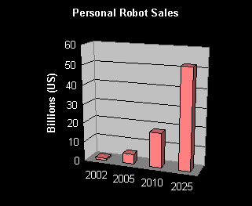

Artificial Intelligence
Artificial Intelligence
Robotics
While there are many advances being made on the pure "thought" process side of the artificial intelligence equation, it is robotics bringing these out of the laboratory and into the real world. Individuals pursuing robotics are approaching artificial intelligence from a much more practical perspective than other branches of AI. Recognizing objects, physically manuevering the environment, performing tasks. These are the functions that will first make AI accessible to most people, which will increase total revenue available to the AI industry which will in turn further promote the development of artificial sentience.
The term robot has been in existence for a short time it was first used in 1920 by Czechoslovakian playwright Karel Capek and comes from the Czech robota, which means tedious labor.
One hundred years hence, in 2020, analysts project that most households will own a robot, or at least be considering one. Robotics is already a US$8 billion industry globally, but most of the robots in use today are industrial robots employed in manufacturing for welding, painting and assembly line tasks.
The consumer robotics marketplace is just emerging, with a gross of US$600 million in 2002, comprised mainly of programmable robots which mow lawns, clean floors and amuse children. But momentum is growing and with expertise concentrated in one spot (Japan) and reducing manufacturing costs the genuinely useful, autonomous household robot is almost upon us.
According to projections from UNEC the personal robotics industry will have grown to US$5.4 billion by 2005 and to US$17.1 billion by 2010 spectacular growth indeed, but humble by comparison to the following decade. A quarter century from now, the robotics industry is expected to rival the automobile and computer industries in both dollars and jobs.
This next generation of robots will be capable of interacting with humans on a sophisticated level, making decisions, helping, caring and giving companionship.
PROJECTED GLOBAL PERSONAL ROBOTICS REVENUES 2002 -2025

Chart based on projections from UNEC
The Laws of Robotics
In 1942 Isaac Asimov defined the Three Laws of Robotics in the book Runaround. He added a fourth at a later date once hed thought a bit more.
LAW 0: A robot may not injure humanity or, through inaction,
allow humanity to come to harm (added later).
LAW 1: A robot may not injure a human being, or, through
inaction, allow a human being to come to harm.
LAW 2: A robot must obey the orders given it by human beings
except where such orders would conflict with the First Law.
LAW 3: A robot must protect its own existence as long as such
protection does not conflict with the First or Second Law.
^ Top ^